Navigation - Update Navigation After (CIC) Head Replaced
SI B65 04 10Audio, Navigation, Monitors, Alarms, SRS
April 2011
Technical Service
This Service Information bulletin supersedes SI B65 04 10 dated March 2010.
[NEW] designates changes to this revision
SUBJECT
CIC Navigation Road Map Installation After CIC Replacement
MODEL
All models with option 609 (Navigation System Professional, CIC)
INFORMATION
The replacement Car Information Computer (CIC) always come with the latest Navigation Road Map database installed.
SITUATION
When replacing a CIC head unit, the road map database version that was in the defective CIC must be installed in the new CIC.
[NEW] PROCEDURE
IMPORTANT:
Before replacing the defective CIC head unit, identify the NAV road map version installed in the defective CIC.
Install the appropriate CIC NAV road map through either ISTA/P or the DVD road map set:
^ Using ISTA/P, refer to Attachment A.
^ Using DVD road map set, refer to Attachment B.
Note:
When installing the CIC NAV road map via the DVD road map set, the REPAIR enabling code must be requested through ASAP. Refer to Attachment C.
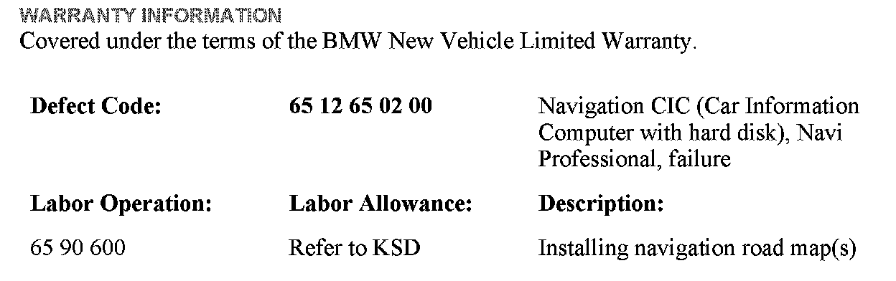
WARRANTY INFORMATION
ATTACHMENTS
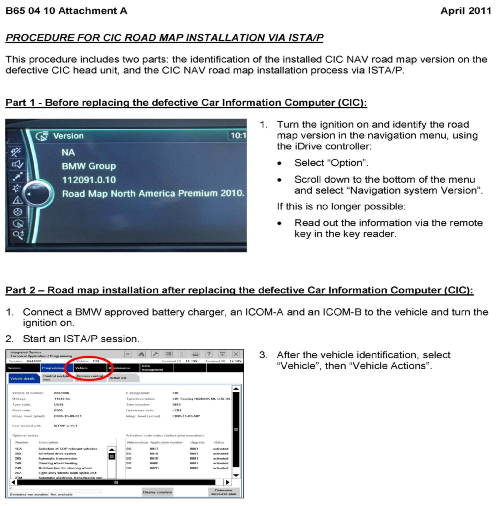
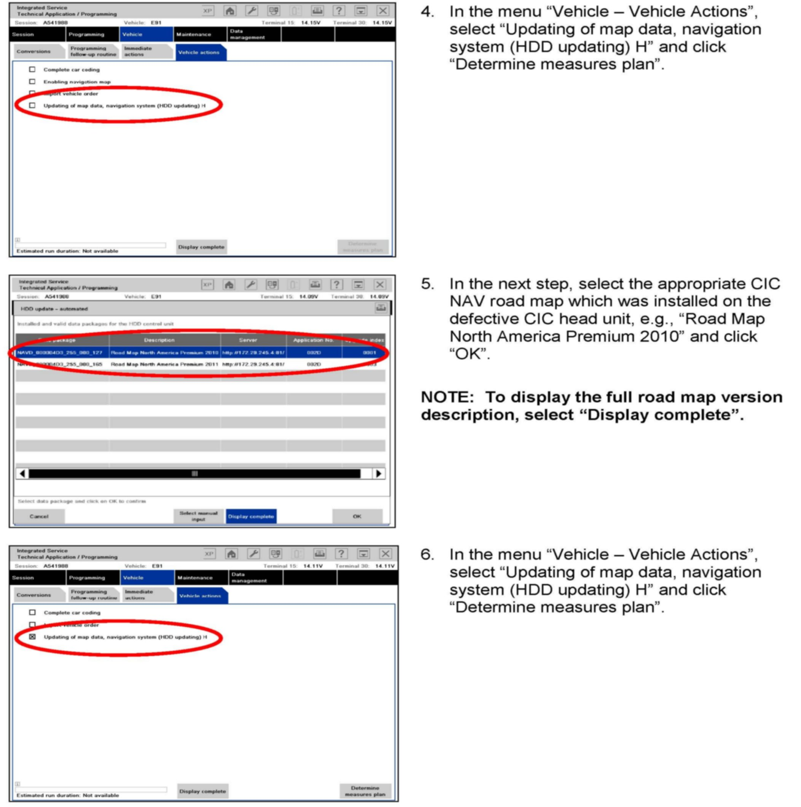
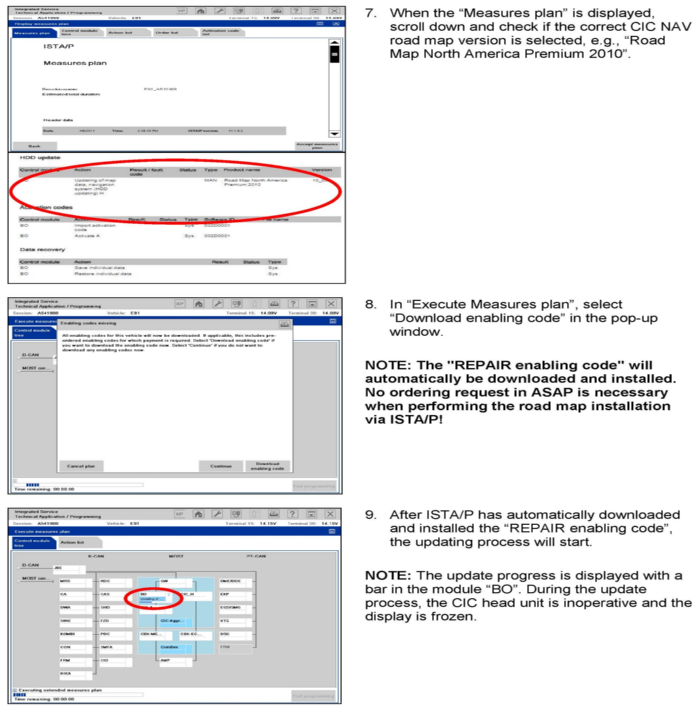
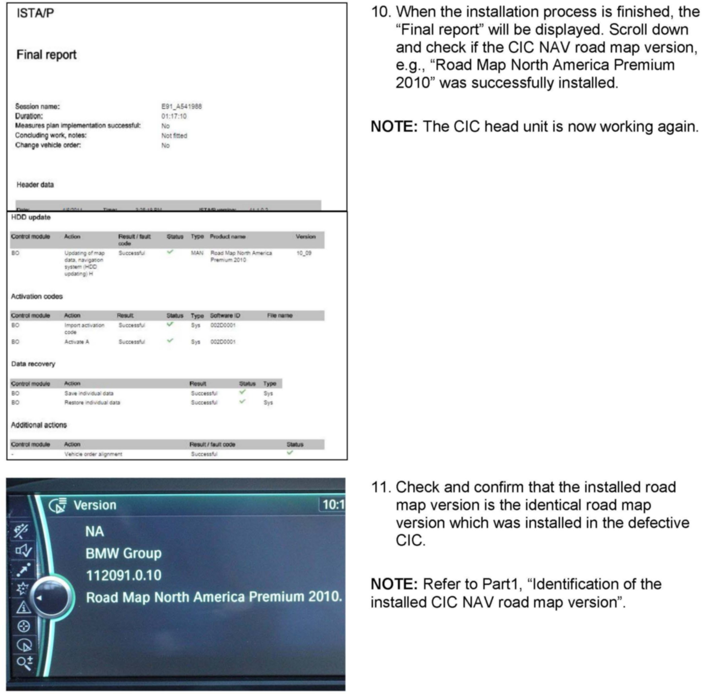
B650410 Attachment A
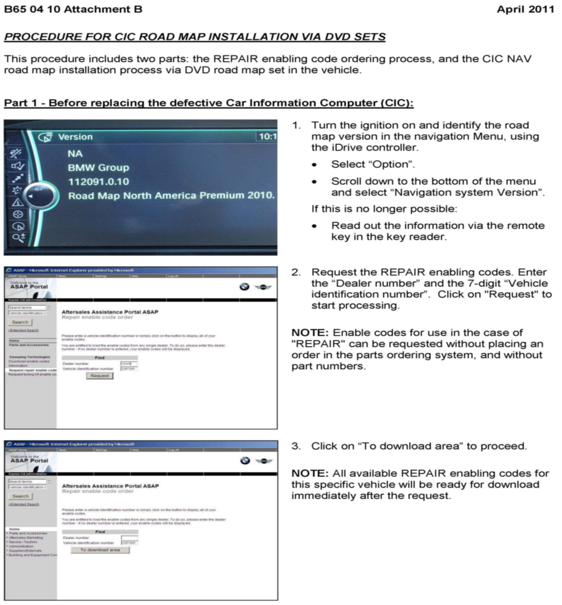
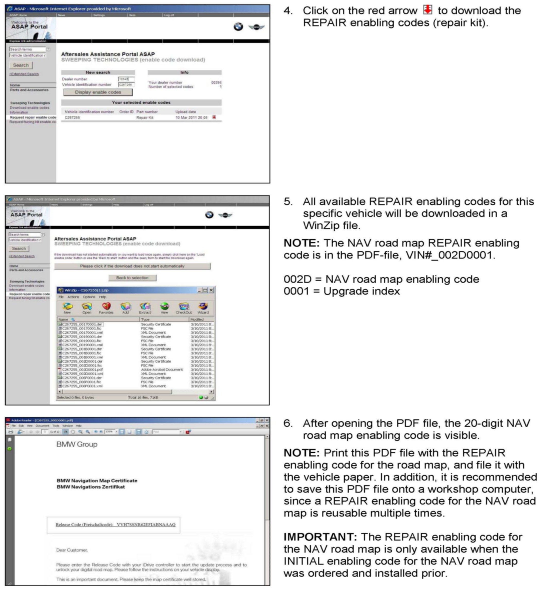
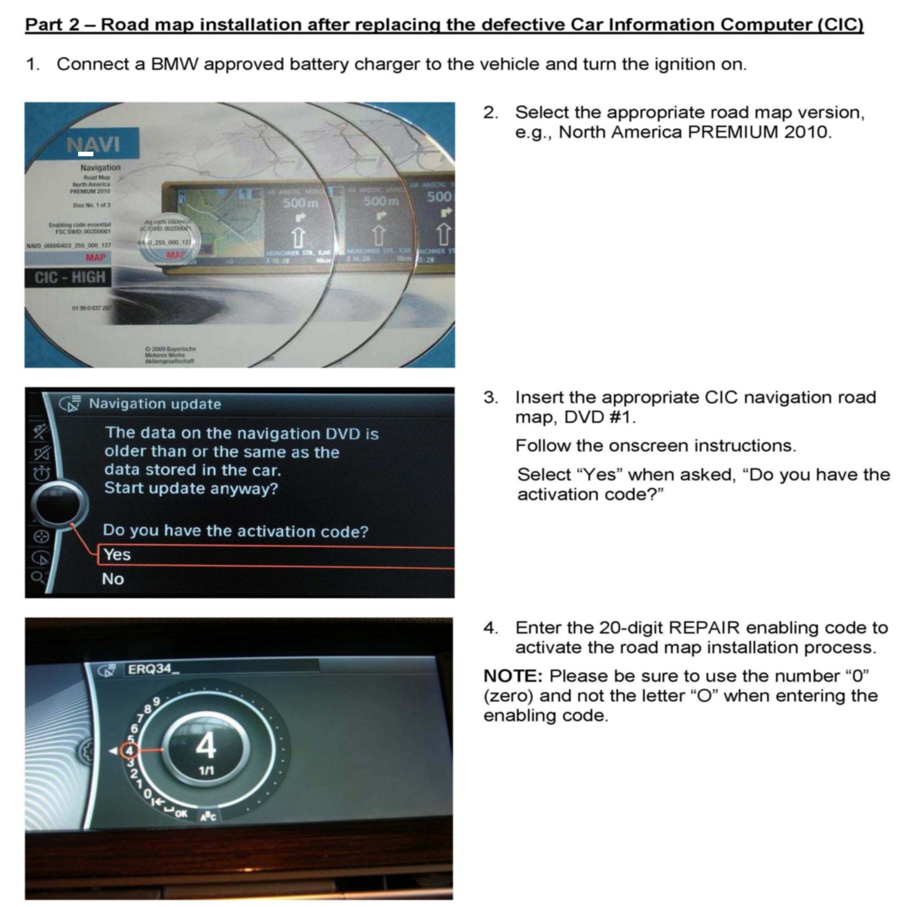
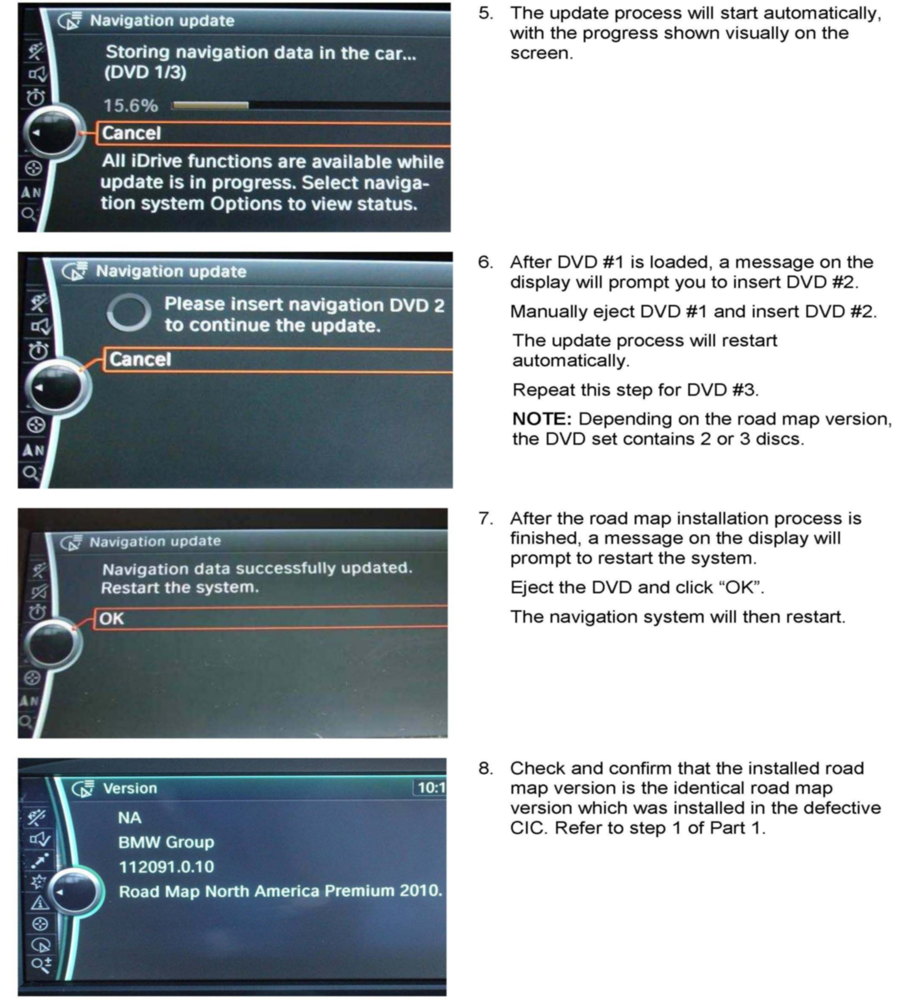
B650410 Attachment B
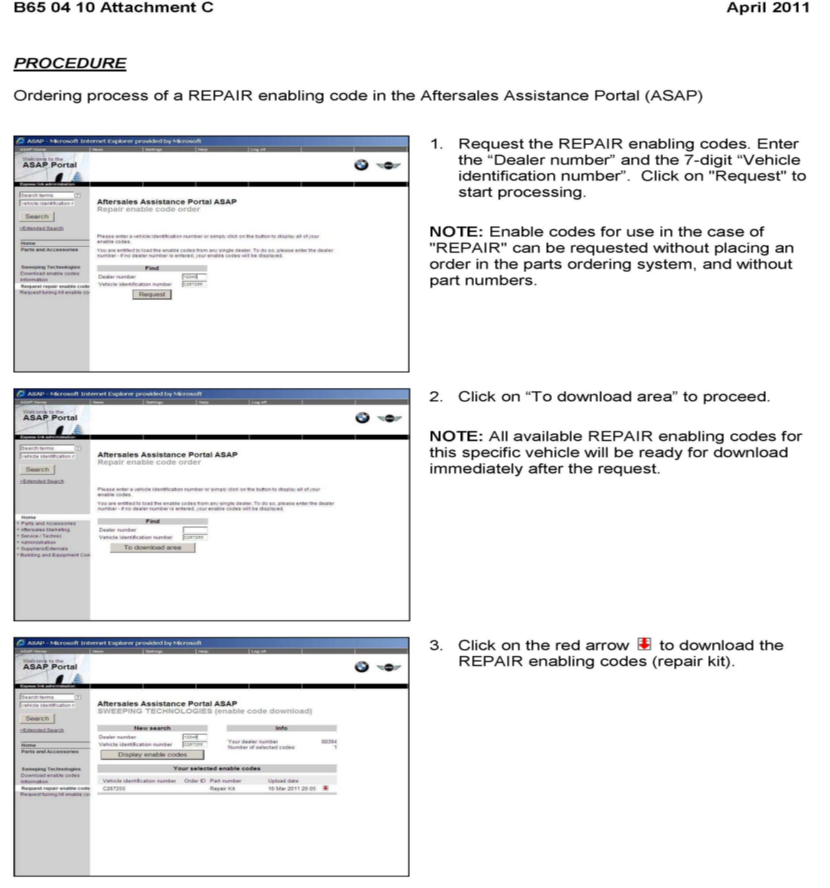
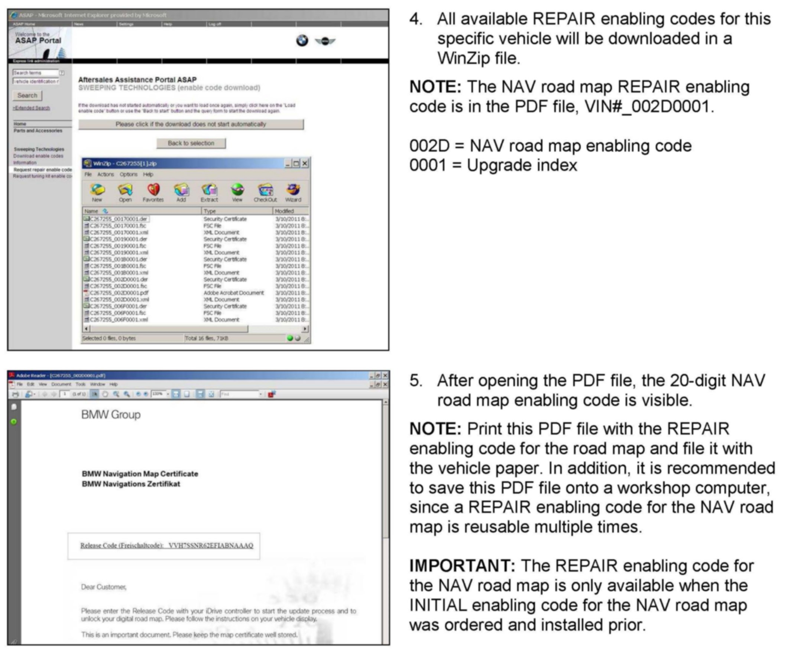
B650410 Attachment C